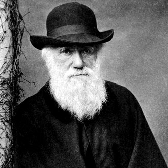
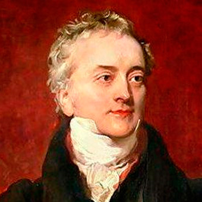

Ada Lovelace (1815-1852):

Fue una inglesa matemática y pionera en el campo de programación de computadoras. Ada no pasó mucho tiempo con su padre ya que su madre se separó de su esposo al poco tiempo de que naciera Ada,y falleció cuando ella tenía solo 8 años.Tuvo una amplia formación en todos los campos.
Ada padecía de una enfermedad que la obligó a pasar muchos años de su vida en cama, pero sin embargo aprovechó ese tiempo trabajando en sus proyectos.
Con 17 años una de sus tutoras le presentó a Charles Babbage, creador de la calculadora mecánica, y ambos colaboraron en sus estudios, con la intención de crear una máquina analítica de carácter general,que se convertiría en el antecedente del ordenador moderno. Ada se casó en 1835 con William King y tuvieron 3 hijos juntos y socializaron con muchas personas ilustres de la época.
En 1842 se encargó de traducir un artículo del matemático Louis Menebrea sobre la máquina analítica, pero Ada añadió a éste sus propios pensamientos e ideas. Por estas notas es considerada la primera programadora de la historia.
Ada describió cómo se podrían crear códigos para que el dispositivo trabaja con números, letras y símbolos, describió también conceptos como el bucle y la subrutina, creó un programa que permitía calcular los valores de los números Bernoulli y realizar operaciones trigonométricas, y detalló el uso de las tarjetas perforadas. Su trabajo fue publicado en 1843 por una revista científica inglesa.
Los últimos años de su vida fueron algo tormentosos y murió en 1852 con 36 años por un cáncer de útero.
He escogido a Ada ya que el área de programación casi siempre se relaciona con hombres y me parece bastante interesante que una mujer sea considerada la primera programadora, además de que, a pesar de padecer una extraña enfermedad, nunca dejó que su condición se interpusiera en su trabajo.
Para más información, haga click aquí
Marie Curie (1867-1934):

Nació en Varsovia y a los 15 años sufrió la frustración de no poder ingresar a la Universidad de su lugar natal por el hecho de que no admitían a mujeres. Es por ello por lo que se apuntó a la “Universidad Volante”, una institución clandestina que realizaron las mujeres como alternativa para ofrecer estudios a todo el mundo (sobre todo de gente que huía del control ruso de entonces).
Cursó física y química y matemáticas en la Universidad de París gracias al “Pacto de damas” que realizó con su hermana Bronya, el cual comprometía a ambas a costearse los estudios mutuamente. Terminó su carrera en 1894 realizando una investigación sobre las propiedades magnéticas de diversos aceros. En ese mismo año conoció al físico francés Pierre Curie, pionero en el estudio de la radiactividad y con quien se casaría formando un matrimonio unido por la ciencia más que por el amor. Estos realizaron numerosas investigaciones juntos.
Marie Curie descubrió los elementos Radio y Polonio iniciando las investigaciones en radioactividad, fundamentales en el estudio de la estructura atómica de la materia y con aplicaciones en medicina y otras disciplinas,siendo la primera mujer en recibir un premio Nobel y la primera persona en recibir dos. El premio de física lo ganó en conjunto con su marido en 1903, pero en 1910 ganó su segundo Nobel en solitario.
Tras la muerte de su marido en 1906, tomó el relevo de todas las investigaciones y le dieron el cargo de profesora de universidad.
En 1934 falleció por una anemia aplástica posiblemente por la continua exposición a la radiación. Todos sus documentos se guardaron en cajas debido a la contaminación que podrían tener.
He querido mencionar a Marie Curie porque se trata de una mujer de gran ejemplo y valentía, quien no se acomodó con la idea de que no podía estudiar por ser mujer, graduándose en un ámbito de gran trabajo y, a pesar de las tragedias de su vida, siguió adelante con sus proyectos hasta el punto de ser mundialmente reconocida y galardonada con premios importantes como son los Nobel. Fue una persona que siguió luchando por su pasión al estudio.
Para más información, haga click aquí
Charles Darwin (1809-1882):
Charles Robert Darwin nació en Sherewsbury el 12 de febrero de 1809. Ya desde la infancia dio muestras de un gusto por la historia natural que él consideró innato y, en especial, de una gran afición por coleccionar cosas.
Con apenas dieciséis años Darwin ingresó en la Universidad de Edimburgo para estudiar medicina, aunque paulatinamente fue dejando de lado estos estudios para dedicarse a la investigación de invertebrados marinos. Posteriormente, la Universidad de Cambridge dio alas a su pasión por las ciencias naturales.
El 27 de diciembre de 1831 realizó la expedición Beagle dirigido por el capitán Robert Fitzroy, que duró casi 5 años y su finalidad era el de completar el estudio topográfico de los territorios de la Patagonia y la Tierra del Fuego, el trazado de las costas de Chile, Perú y algunas islas del Pacífico y la realización de una cadena de medidas cronométricas alrededor del mundo. Intrigado por la distribución geográfica de la vida salvaje y por los fósiles, Darwin investigó sobre el hecho de la transmutación de las especies y concibió su teoría de la selección natural en 1838.
El 27 de diciembre de 1839 nació el primer hijo del matrimonio, y Darwin inició con él una serie de observaciones, que se prolongaron a lo largo de los años, sobre la expresión de las emociones en el hombre y en los animales. De 1846 a 1854, Darwin se convirtió en un verdadero naturalista.
Su obra fundamental “El origen de las especies por medio de la selección natural'', publicada el 24 de noviembre de 1859, estableció que la explicación de la diversidad que se observa en la naturaleza se debe a las modificaciones acumuladas por la evolución a lo largo de las sucesivas generaciones.
En 1871 redactó “El origen del hombre y de la selección en relación al sexo” y en 1872 escribió “La expresión de las emociones en los animales y en el hombre”. También dedicó una serie de publicaciones a sus investigaciones en botánica.
A finales de 1881 comenzó a padecer graves problemas cardíacos, y falleció a consecuencia de un ataque al corazón el 19 de abril de 1882.
En cuanto a este autor, le quería nombrar en este trabajo debido a que es uno de los grandes científicos de la Historia de la humanidad y que, gracias a él, tenemos todos esos conocimientos que hoy en día tenemos sobre grandes cuestiones de la humanidad y del mundo en el que vivimos.
Para más información, haga click aquí
Thomas Young (1773-1829):
Nació en el seno de una familia cuáquera y recibió una educación estricta y extensa. Estudió medicina pero no tuvo éxito como doctor. A los 28 años se unió a la Royal Institution de Londres en la que realizó 91 conferencias durante su estancia como profesor.
Su contribución fundamental al campo de la luz es el experimento de la doble rendija: al permitir que la luz pasara a través de dos agujeros muy pequeños en una pantalla, Young descubrió que los haces de luz se separaban y se superponían y, en el área de superposición, las bandas de luz brillante alternaban con bandas de oscuridad. Con esta demostración de la interferencia de la luz, estableció definitivamente la naturaleza ondulatoria de la luz y desafió las teorías de Isaac Newton. Otras de sus contribuciones más importantes fueron la teoría de la visión del color, sus investigaciones en óptica fisiológica (de la que se le considera el fundador), estudios sobre elasticidad de materiales.
Además, fue uno de los primeros en descifrar jeroglíficos egipcios y desempeñó un papel esencial en la descodificación de la piedra de Rosetta al haber aprendido diversos idiomas desde pequeño,como griego, latín, francés, italiano, hebreo, sirio, árabe, persa, etc.
He escogido a este científico porque, además de nunca haber escuchado sobre él, siempre me ha interesado todo lo relacionado con la visión y los colores.
Para más información, haga click aquí